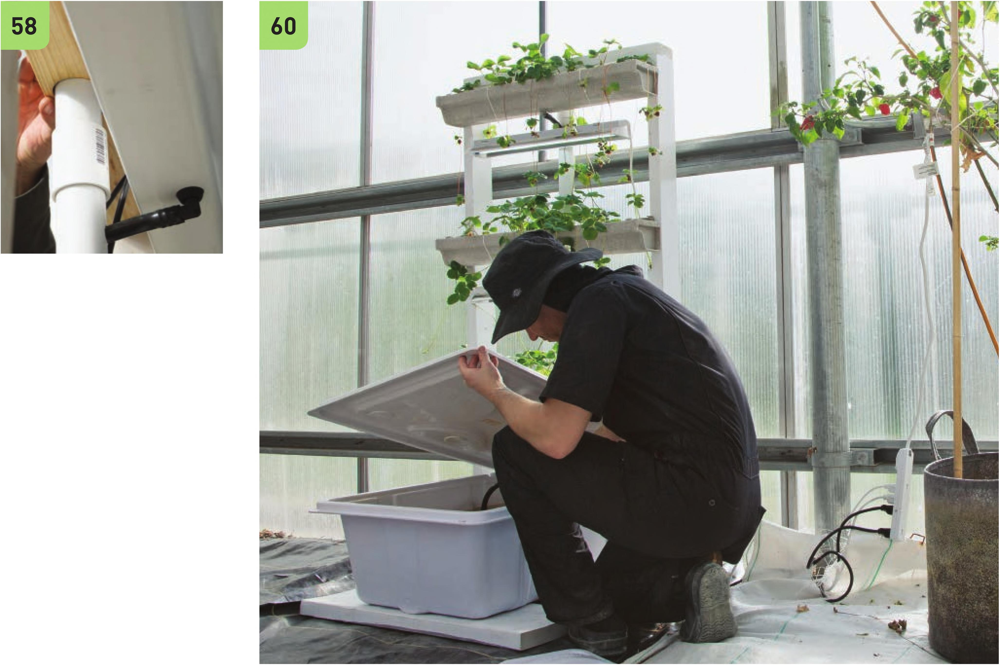

51 Connect the 2" segments and 1 0" segments of W tubing using the W shutoff valves. 52 Disconnect the PVC mainline at the IV2" couplings. 53 I nsert the assembled VC tubes from step 51 into the VC holes in the PVC main line. Insert the 1 0" segment into the PVC so the W shutoff valve remains outside of the PVC mainline. 54 Starting from the top of the PVC main line, connect the 10" segment of the W vinyl tubing to the VC double-barbed connector in the V2" vinyl tubing. 55 Slide the V2" vinyl tubing down the PVC main line and continue connecting the 10" segments of the VC vinyl tubing to the VC double-barbed connectors in the V2" vinyl tubing. 56 Reconnect the PVC main line segments. 57 Slide the bottom end of the V2" vinyl tubing through one of the drain holes created in step 37. 58 Place the assembled PVC main line back into the vertical system with the top held in place by the guide hole in the 2 x 4" wood crossbeam. 59 Insert the V2" drain lines coming out of each gutter into their corresponding W' hole in the PVC main line. 60 Connect the bottom end of the V2" vinyl tubing to a pump in the reservoir. HYDROPONIC GROWING SYSTEMS 133
